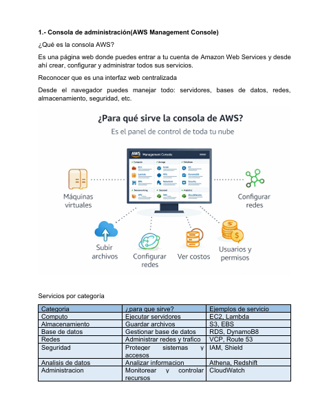
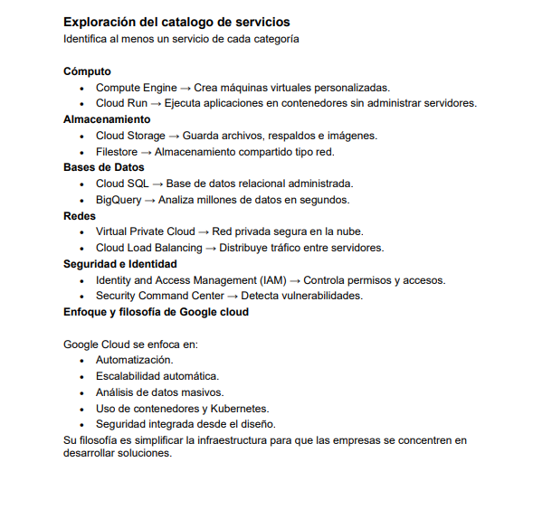
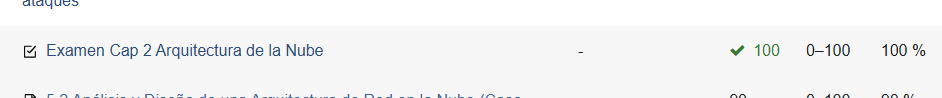

Descripcion:Identificar los principales componentes, servicios y conceptos de la plataforma AWS y comprender cómo se relacionan con las modalidades de cómputo en la nube (IaaS, PaaS y SaaS).
Fecha: 10 Febrero 2026
Aprendizaje: Conoci los servicios principales de AWS y su utilidad.
Reflexion: Me ayudo a entender como funciona una plataforma real de computo en la nube.

Descripcion: Explorar la plataforma Google Cloud Platform, identificar sus principales servicios, comprender su enfoque dentro del cómputo en la nube y reconocer sus ventajas, usos y perfiles profesionales asociados, sin necesidad de implementar infraestructura real.
Fecha: 17 Febrero 2026
Aprendizaje: Identifique servicios como almacenamiento, maquinas virtuales y bases de datos.
Reflexion: Me ayudo a comparar diferentes plataformas de nube.

Descripcion: Explorar la plataforma GitHub para entender su funcionamiento y utilidad en el desarrollo de software.
Fecha: 17 Febrero 2026
Aprendizaje: Aprendi a subir archivos y controlar versiones.
Reflexion: Fue importante para entender el trabajo colaborativo en desarrollo.
Descripcion: Explorar la plataforma Microsoft Azure, mediante la identificación de sus principales servicios para comprender su modelo de funcionamiento, costos y ventajas para las organizaciones.
Fecha: 15 Marzo 2026
Aprendizaje: Conoci sus herramientas para desarrollo y administracion en la nube.
Reflexion: Me ayudo a identificar diferencias entre Azure y otras plataformas.
Descripcion: Examen de arquitectura de la nube
Fecha: 20 Abril 2026
Aprendizaje: Conoci sus herramientas para desarrollo y administracion en la nube.
Reflexion: Me ayudo a identificar diferencias entre Azure y otras plataformas.
